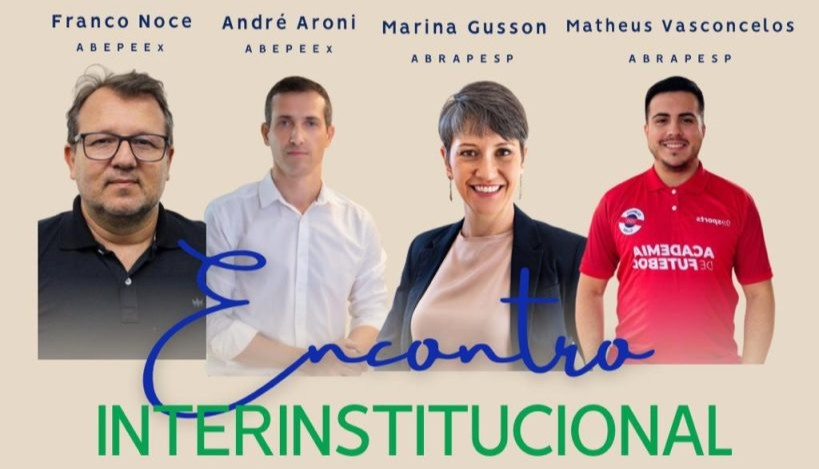

Pela primeira vez na História, no sábado 16 de agosto de 2025, ABRAPESP e ABEPEEx, as duas principais associações de Psicologia do Esporte no Brasil, se uniram em um evento interinstitucional. E o tema responsável por este evento foi: Psicologia do Esporte e o Coaching Esportivo.
A temática importante e atual foi o enfoque de quase duas horas de papo e trocas com os presentes.
Participaram dessa discussão Marina Gusson e Matheus Vasconcelos, representando a ABRAPESP, e André Aroni e Franco Noce representando a ABEPEEx, com a mediação de Birgit Marsili.
Confira o encontro na íntegra no Youtube da ABRAPESP!